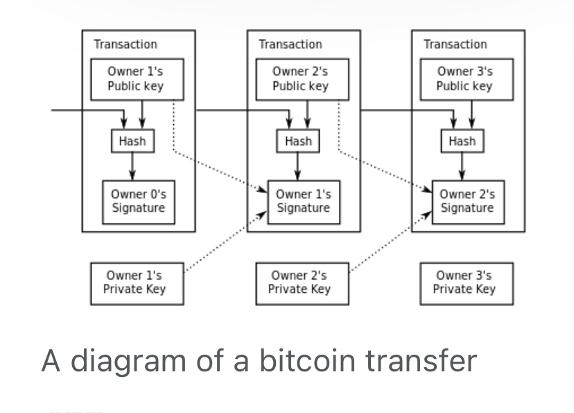

Bitcoin, A Peer-to-Peer Payment System
Commerce on the Internet has come to rely almost exclusively on financial institutions serving as
trusted third parties to process electronic payments. While the system works well enough for
most transactions, it still suffers from the inherent weaknesses of the trust based model.
Completely non-reversible transactions are not really possible, since financial institutions cannot
avoid mediating disputes. The cost of mediation increases transaction costs, limiting the
minimum practical transaction size and cutting off the possibility for small casual transactions,
and there is a broader cost in the loss of ability to make non-reversible payments for nonreversible services. With the possibility of reversal, the need for trust spreads. Merchants must
be wary of their customers, hassling them for more information than they would otherwise need.
A certain percentage of fraud is accepted as unavoidable. These costs and payment uncertainties
can be avoided in person by using physical currency, but no mechanism exists to make payments
over a communications channel without a trusted party.
What is needed is an electronic payment system based on cryptographic proof instead of trust,
allowing any two willing parties to transact directly with each other without the need for a trusted
third party. Transactions that are computationally impractical to reverse would protect sellers
from fraud, and routine escrow mechanisms could easily be implemented to protect buyers. In
this paper, we propose a solution to the double-spending problem using a peer-to-peer distributed
timestamp server to generate computational proof of the chronological order of transactions. The
system is secure as long as honest nodes collectively control more CPU power than any
cooperating group of attacker nodes.
Transactions

We define an electronic coin as a chain of digital signatures. Each owner transfers the coin to the
next by digitally signing a hash of the previous transaction and the public key of the next owner
and adding these to the end of the coin. A payee can verify the signatures to verify the chain of ownership.
The problem of course is the payee can't verify that one of the owners did not double-spend
the coin. A common solution is to introduce a trusted central authority, or mint, that checks every
transaction for double spending. After each transaction, the coin must be returned to the mint to
issue a new coin, and only coins issued directly from the mint are trusted not to be double-spent.
The problem with this solution is that the fate of the entire money system depends on the
company running the mint, with every transaction having to go through them, just like a bank.
We need a way for the payee to know that the previous owners did not sign any earlier
transactions. For our purposes, the earliest transaction is the one that counts, so we don't care
about later attempts to double-spend. The only way to confirm the absence of a transaction is to
be aware of all transactions. In the mint based model, the mint was aware of all transactions and
decided which arrived first. To accomplish this without a trusted party, transactions must be
publicly announced [1], and we need a system for participants to agree on a single history of the
order in which they were received. The payee needs proof that at the time of each transaction, the
majority of nodes agreed it was the first received.